目標
做法:把模式從笛卡兒 (lat, lon) 網格改成 TC 中心極座標 (r, θ)
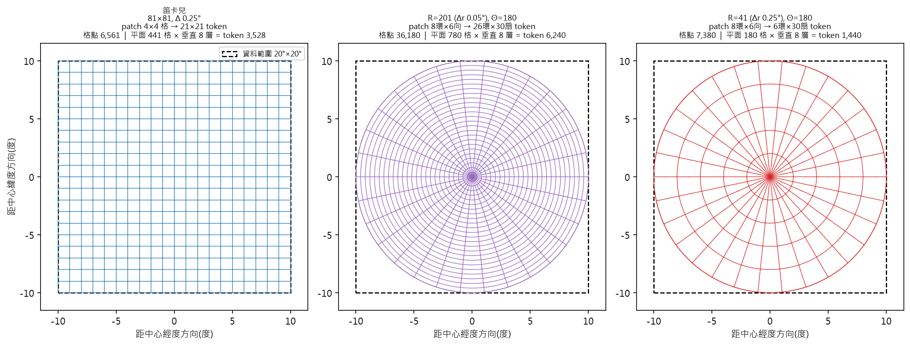
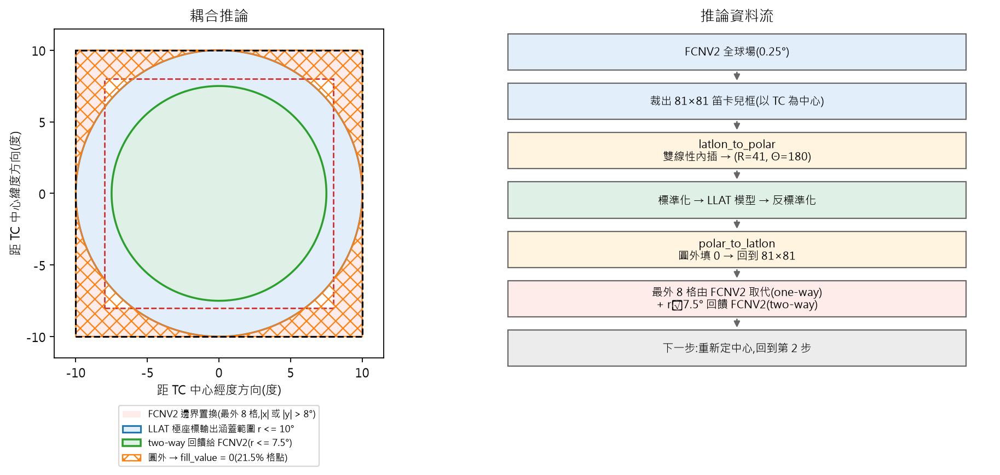
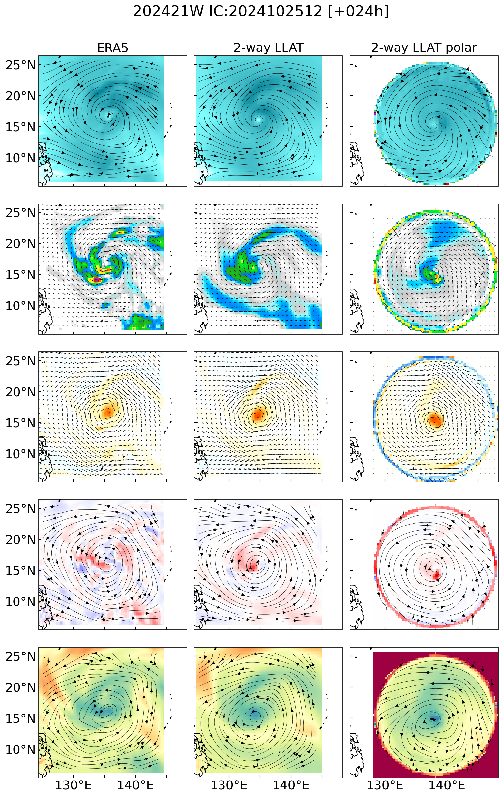
| 笛卡兒 | r=0.05° | r=0.25°(本次) | |
|---|---|---|---|
| 網格 | 81 × 81 | 201 × 180 | 41 × 180 |
| 徑向間距 Δr | 0.25°(等向) | 0.05° | 0.25° |
| 方位間距 Δθ | — | 2° | 2° |
| window shape | [2, 4, 4] | [2, 10, 15]&[2, 8, 10] | [2, 10, 15]&[2, 8, 10] |
| patch shape | [2, 4, 4] | [2, 8, 6] | [2, 8, 6] |
| r=0.05° 版 | 本次(r=0.25°) | |
|---|---|---|
| GPU | 4 張 | 8 張 H200 |
| 每卡 batch | 1 | 4 |
| 精度 | fp32 | 實驗中 |
| 峰值學習率 | 4e-4 | 實驗中 |
| warmup | 1,000 步 | 1,000 步 |
| 梯度裁剪 | 2.0 | 2.0 |
max_steps |
1,600,000 | 105,000 |
| 實跑步數 | 252,160(15.8%) | 104,979(100%) |
| 高空變數(× 13 層) | u, v, t, q, z, w | vt, vr, t, q, z, w |
| 地面變數 | u10, v10 + 其他(16個) | vt10, vr10 + 其他(16個) |
| 總時數 | X | 6.7 小時 |
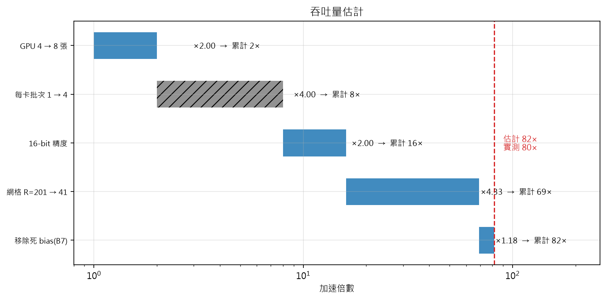
問題 — earth.specfic_bias關掉但torch.zeros 產生的全0 bias仍要搬到GPU運算
修正 — 移除 attention + bias 整條路徑
結果 — forward 快 18%
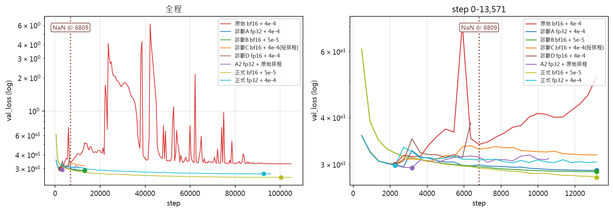
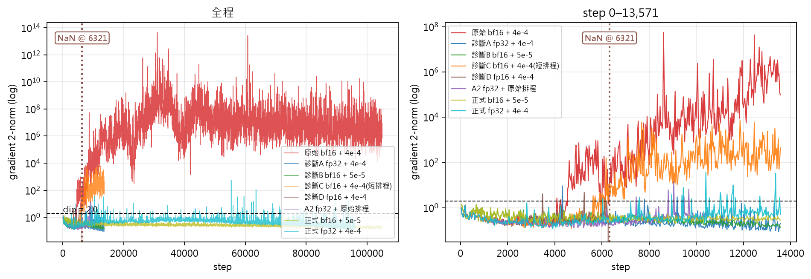
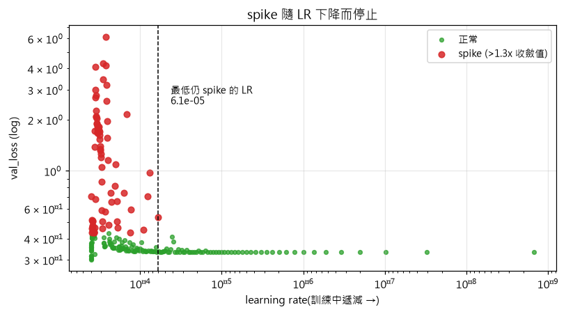
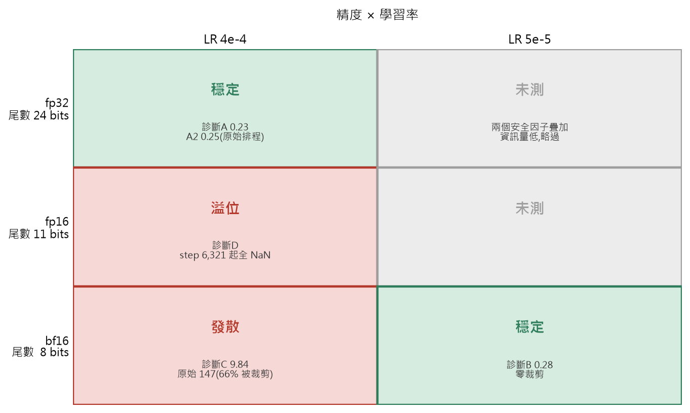
兩個訓練於3 小時的即時量測
| GPU 使用率 | 記憶體 | 功耗 | CPU 閒置 | 等 I/O | 節點負載 | |
|---|---|---|---|---|---|---|
| bf16(job 235101) | 15% | 6.2 / 143.8 GB | 150 W / 700 W | 63–85% | 0% | 34.5 / 96 核 |
| fp32(job 235102) | 76–100% | 6.4 / 143.8 GB | 235 W / 700 W | 79–80% | 0% | 24.8 / 96 核 |
下一步:每卡 batch 4 → 16 或 32,但加大 batch 會改變有效學習率，必須再重調 LR
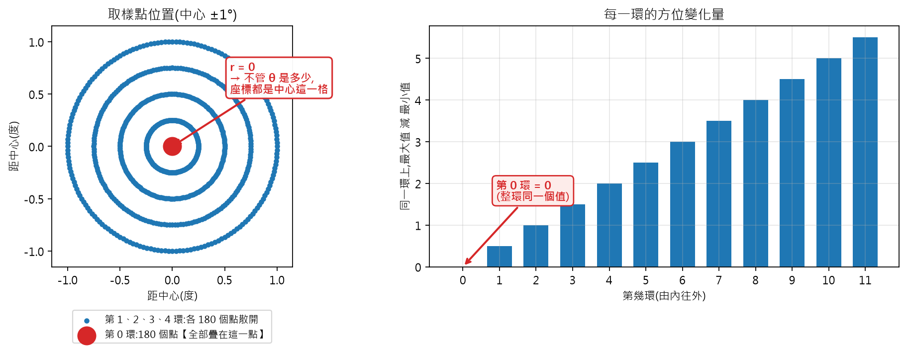
正在跑
| 實驗 | 設定 | 時數 |
|---|---|---|
| 正式訓練 A | bf16 + LR 5e-5,105,000 步 | 6.9 h |
| 正式訓練 B | fp32 + LR 4e-4,96,000 步 | 9.0 h |
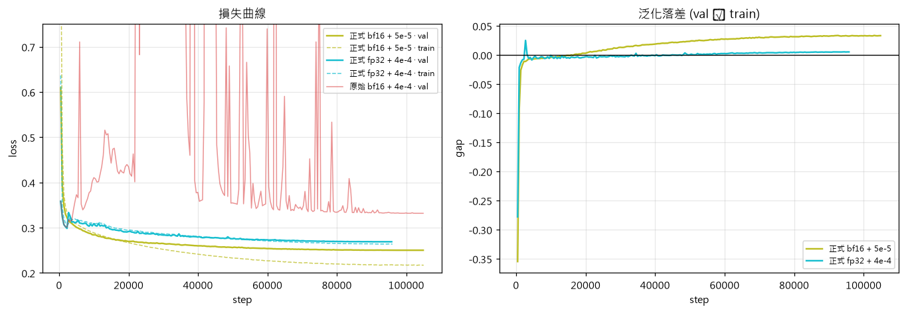
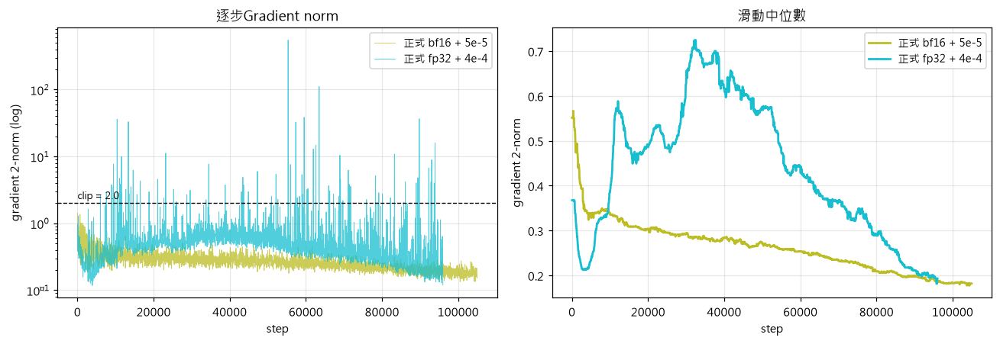
未來展望
| # | 項目 | 原因 |
|---|---|---|
| 1 | 加大 batch | 提高GPU 跟記憶體利用率 |
| 2 | 推論端 | 實驗不同配置、查看實際輸出 |
| 3 | r_min = Δr/2 |
消除中心奇點 |
| 4 | 調整window/patch | 避免算力浪費 |
高空:6 變數 × 13 氣壓層 氣壓層 = 50, 100, 150, 200, 250, 300, 400, 500, 600, 700, 850, 925, 1000 hPa
| 變數 | 意義 | 極座標版 |
|---|---|---|
u, v |
東西 / 南北風 | vt, vr(切向 / 徑向風) |
t |
溫度 | 同左 |
q |
比濕 | 同左 |
z |
重力位 | 同左 |
w |
垂直速度 | 同左 |
地面:18 個物理變數 + 2 個座標 = 20 通道
| 類別 | 變數 |
|---|---|
| 風 | u10, v10 → vt10, vr10 |
| 熱力 | t2m(2m 氣溫)、d2m(2m 露點)、sst_filled(海表溫) |
| 氣壓 | msl(海平面)、sp(地面) |
| 水氣 / 降水 | tcwv(整層可降水)、tp(總降水) |
| 輻射 | mtnlwrf(頂層長波,對流指標)、solar(太陽輻射) |
| 地理 | hgt(地形)、landmask(陸海遮罩)、f(科氏參數) |
| 時間編碼 | diurnal_sin/cos(日循環)、doy_sin/cos(年循環) |
| 座標 | lon, lat ← 由 ingest_space_info: true 自動附加 |
lon / lat 是被預測的通道